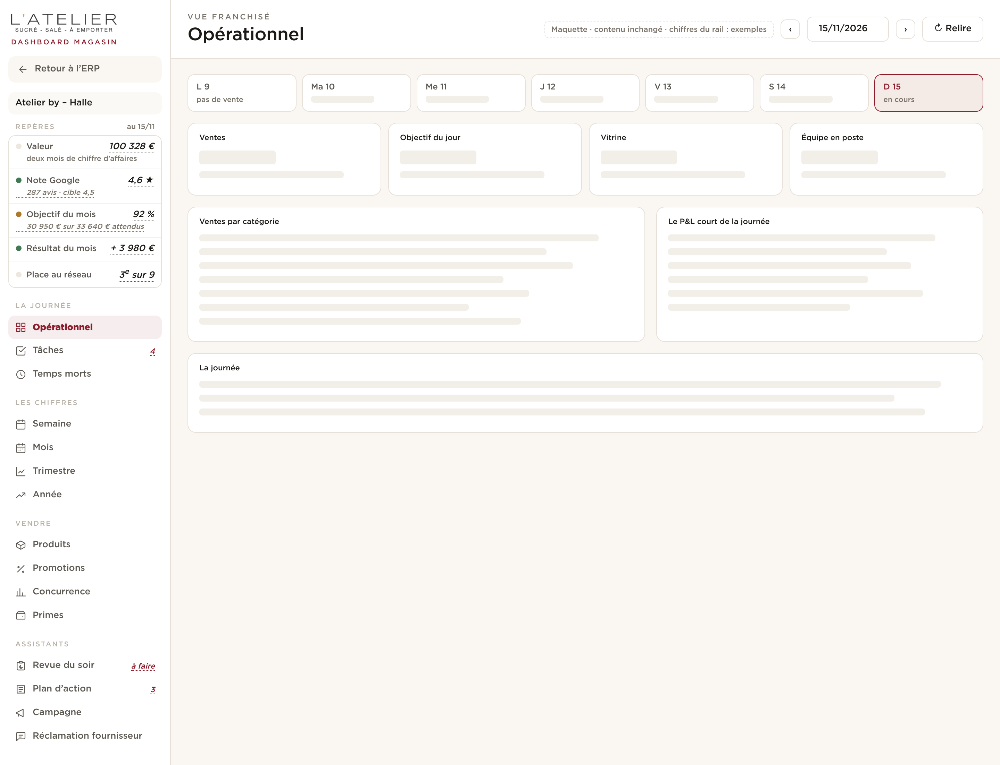

A — Les repères en listele rail du Marketing tel quel ; les onze onglets rangés en trois groupes, les assistants en bas

B — Le tableau de bord dans le railchaque repère a sa forme ; Résultat réunit Semaine, Mois, Trimestre et Année en ongletsC — Les assistants d’abordquatre cases, la revue du soir en tête, puis ce qu’il reste à faire